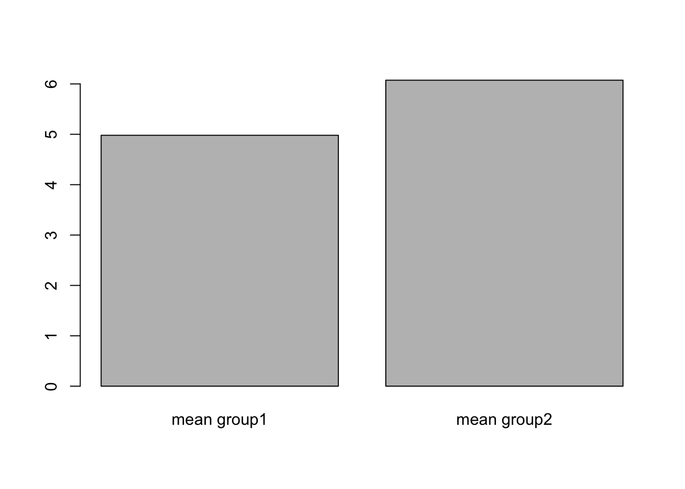
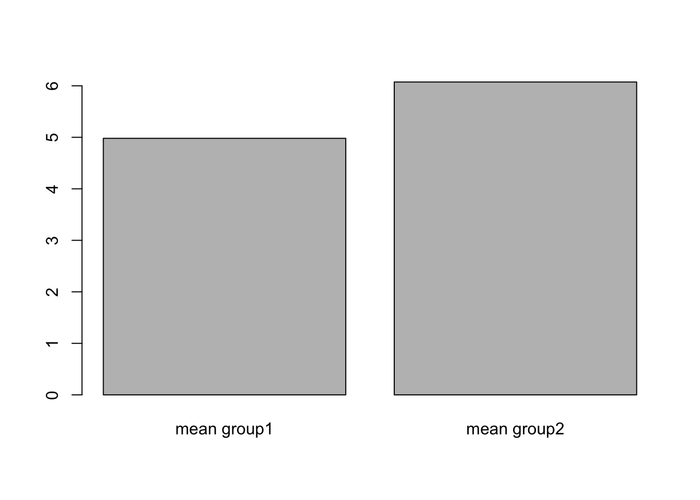
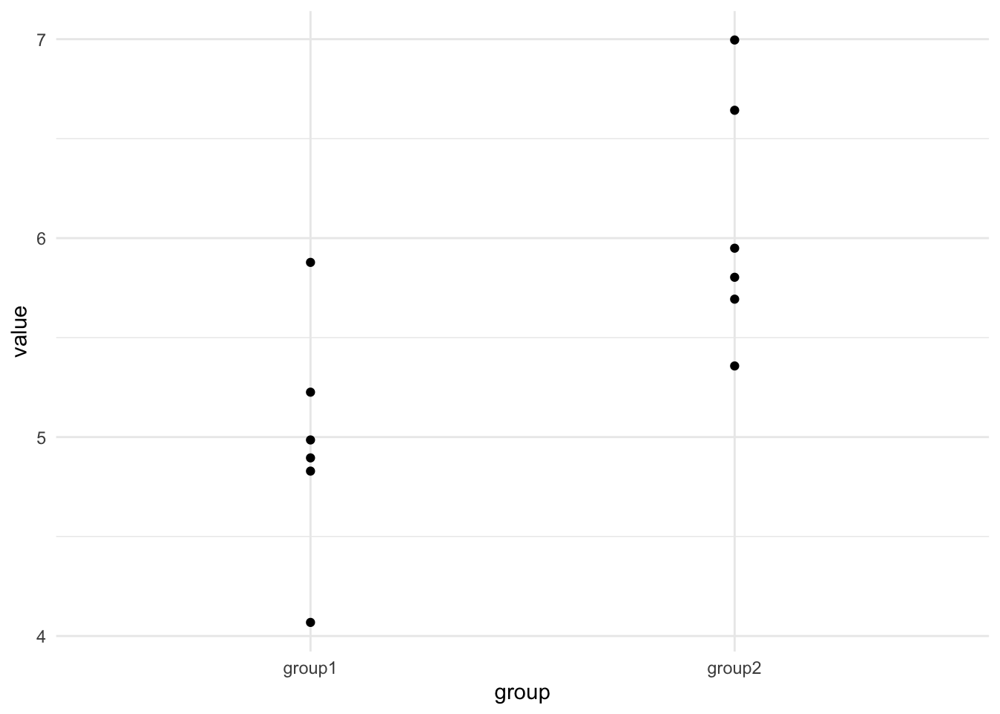
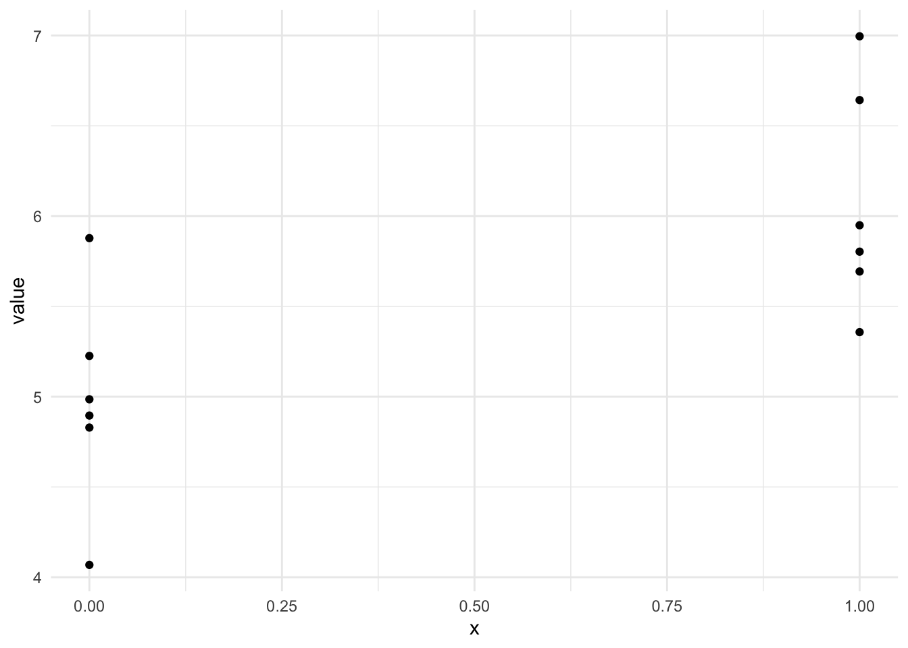
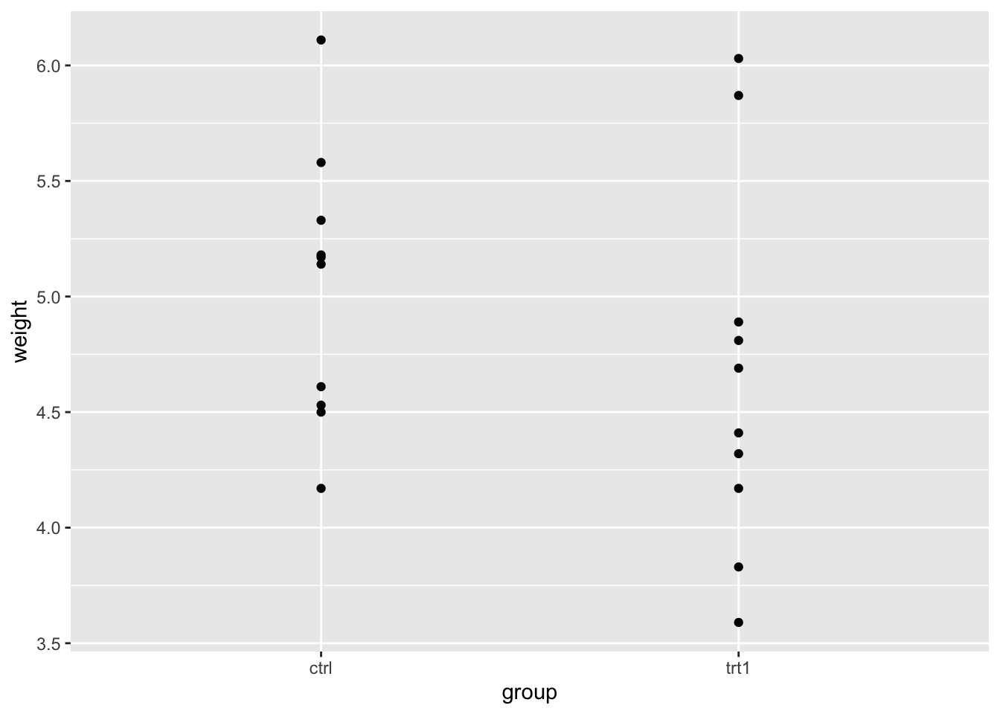
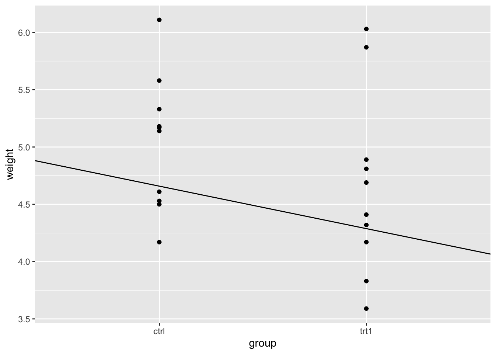
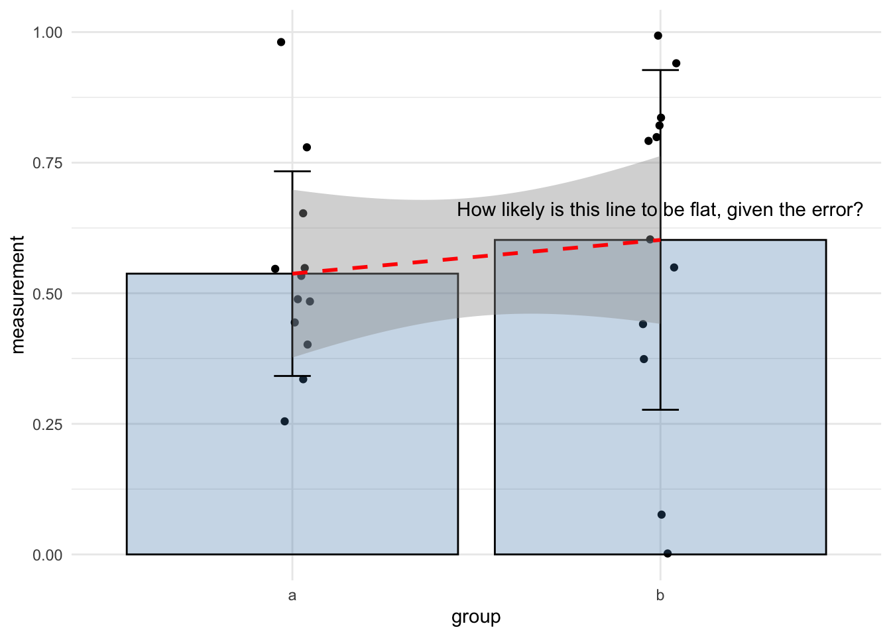

Chapter 4 \(t\)-tests and linear models
In this section we’ll look at how the linear model can be used as a conceptual tool to understand the sort of comparison a \(t\)-test does and as a straightforward way to perform a hypothesis test.
4.1 Recap
Because I like hammering this point home, Im going to recap two important points from our work on linear models.
- The slope of the model is the important thing
- ‘Significance’ tests only test whether the difference between two things is ‘probably not 0’
4.1.1 The slope of the model again
Recall the linear model equation
\[\begin{equation} y = ax + b \end{equation}\]
and that if we let the coefficient \(a = 0\), the effect of \(x\) disappears
\[\begin{equation} y = 0 x + b\\ y = b \end{equation}\]
So the logical conclusion is that if we have a coefficient that is non-zero, we have a relationship/effect of \(x\) on \(y\).
It is this property that let’s us use the linear model to work out whether there is a significant difference between groups! That is to say we can use it as a \(t\)-test.
However, the second we try to apply what we’ve learned with the linear model to a two-sample dataset we hit an apparent problem because we’ve learned how to make linear models from datasets with a continuous, numeric \(x\)-axis, but the data we have for a \(t\)-test has a very different two category look, something like these here:
 

The question then is what do we do with the categoric data to put it in a linear model?
The first step is to realise that although we are used to thinking of the each of the bars representing a single number, that single number is (almost always) a mean of replicate values, so we go back to those source numbers as a first step

and we have something a lot more like the scatterplot we’re used to. The next step is to replace the categories with numbers for the \(x\)-axis. That means going from data like this
| group1 | group2 |
|---|---|
| 4.895422 | 5.949330 |
| 5.225740 | 5.357527 |
| 4.828976 | 5.803222 |
| 5.878021 | 5.693268 |
| 4.068426 | 6.995864 |
| 4.985580 | 6.642633 |
to this
| group | value | x |
|---|---|---|
| group1 | 4.895422 | 0 |
| group1 | 5.225740 | 0 |
| group1 | 4.828976 | 0 |
| group1 | 5.878021 | 0 |
| group1 | 4.068426 | 0 |
| group1 | 4.985580 | 0 |
| group2 | 5.949330 | 1 |
| group2 | 5.357527 | 1 |
| group2 | 5.803222 | 1 |
| group2 | 5.693268 | 1 |
| group2 | 6.995864 | 1 |
| group2 | 6.642633 | 1 |
So now we can make a plot that looks a lot more like the one we’re expecting

albeit with the \(x\)-values in two places on the \(x\)-axis - its enough for us to make a slope on the line between the two groups and that means that we can use the linear model for the categoric data, as we did for the continuous.
If this seems like a bit of a ‘hack’ then thats fair, but hacks are usually just pragmatic and useful solutions to problems, this one is completely mathematically legitimate as well as useful.
And if this change in the data reminds you of tidy data we’ve used in other courses, like dplyr, then that is no accident. Tidy data is designed to make this sort of analysis easy to work through, at least as far as organising the data goes.
The good news is that once we have our data setup, the lm() function just deals with these issues for us, we don’t have to worry, the problem of contnuous or categoric \(x\)-axes just disappears!
So let’s work through an example of a linear model based hypothesis test for differences between two groups that functions as a \(t\)-test.
4.2 The PlantGrowth data
R comes with lots of datasets built in. One if these is PlantGrowth, which describes the dry weight of plants in grams in replicated measurements in a control and two treatments. We can load it with data() and get a summary()
## weight group
## Min. :3.590 ctrl:10
## 1st Qu.:4.550 trt1:10
## Median :5.155 trt2:10
## Mean :5.073
## 3rd Qu.:5.530
## Max. :6.310## weight group
## 1 4.17 ctrl
## 2 5.58 ctrl
## 3 5.18 ctrl
## 4 6.11 ctrl
## 5 4.50 ctrl
## 6 4.61 ctrlWe have three groups and one measurement, in our linear model this means that the \(x\) values would come from the group column - because it is categoric rather than continuous as we had before isn’t a concern. The \(y\) values would come from the weight column.
In linear modelling jargon, the \(x\) values are called the independent or explanatory variable, simply because this is the one we changed over the course of the experiment. The \(y\) values are called the dependent or response variables as this is the one that responds or changes according to the changes in the independent variable.
For simplicity at this stage we’ll work with two groups only. Let’s remove trt2.
library(dplyr)
two_groups <- PlantGrowth %>%
filter(group != "trt2") %>%
droplevels()
summary(two_groups)## weight group
## Min. :3.590 ctrl:10
## 1st Qu.:4.388 trt1:10
## Median :4.750
## Mean :4.846
## 3rd Qu.:5.218
## Max. :6.110With that done, we can look at the categorical scatter plot.

We can clearly see the weight spread in each group. By eye we can see that the groups overlap in the \(y\)-axis (weight) quite considerably, though trt1 seems to have a couple of data points that are lower.
4.3 A linear model with a categoric \(x\)-axis
Let’s make the linear model and get the intercept and coefficient of the line. This can be done with lm() as we did before, but because we have the data in a dataframe, we need to specify a data argument, which just means ‘look for the data in the given object’.
##
## Call:
## lm(formula = weight ~ group, data = two_groups)
##
## Coefficients:
## (Intercept) grouptrt1
## 5.032 -0.371That calculates easily! The lm() isn’t worried by the fact that one of our variables is categoric. It knows all the levels of the group variable and gives us the intercept and coefficient as it did before.
4.4 Using the statistics of the linear model to test for differences
Now we have a categoric linear model built we can start to look at how to use it to check for differences between the groups.
##
## Call:
## lm(formula = weight ~ group, data = two_groups)
##
## Residuals:
## Min 1Q Median 3Q Max
## -1.0710 -0.4938 0.0685 0.2462 1.3690
##
## Coefficients:
## Estimate Std. Error t value Pr(>|t|)
## (Intercept) 5.0320 0.2202 22.850 9.55e-15 ***
## grouptrt1 -0.3710 0.3114 -1.191 0.249
## ---
## Signif. codes: 0 '***' 0.001 '**' 0.01 '*' 0.05 '.' 0.1 ' ' 1
##
## Residual standard error: 0.6964 on 18 degrees of freedom
## Multiple R-squared: 0.07308, Adjusted R-squared: 0.02158
## F-statistic: 1.419 on 1 and 18 DF, p-value: 0.249From the output we can see the coefficient isn’t huge, only about 1/3 of a gram decrease as we change along the \(x\) axis by one unit. Saying change along the axis by one unit in categoric axes sounds a bit strange, but in the categoric data it just means switching from one group to the next. Lets add the line to the plot and have a look.

Just looking at the plot makes the line look seem substantial than it is. Looking at the \(y\)-axis and the places where the line intercepts with the categories then we can see the difference is close to the coefficient.
4.4.1 The coefficient and the mean difference between groups are equivalent
Before we move along with our model, we should look at that coefficient of the group variable a bit more. As we’re moving from the ctrl to treatment groups the coefficient tells us the size of the change. So does this mean that the coefficient is equivalent to other measures by which we can tell the difference in two groups - is it, for example equivalent to calculating the difference in the means of the groups? Short answer is yes! Let’s look at that, recalling that the coefficient is 0.371.
First get the means of the groups
mean_two_groups <- two_groups %>%
group_by(group) %>%
summarize(mean_wt = mean(weight))
mean_two_groups## # A tibble: 2 x 2
## group mean_wt
## <fct> <dbl>
## 1 ctrl 5.03
## 2 trt1 4.66Now calculate the difference
## [1] 0.37There you have it, the absolute values of each are very similar. You can use the coefficient as a way of finding the difference between the groups. Another handy feature of the linear model.
4.4.2 The \(p\)-value of the co-efficient tests the same thing as a \(t\)-test
We already know that the \(Pr(>|t|)\) value (\(p\)-value of the coefficient) tells us the probability that we would see the slope observed or greater in random samples if the real difference were 0. The two-sample \(t\)-test reports the probability that we would see the difference in means observed if the real difference were 0. So the two are very similar.
The \(p\)-value for the coefficient in the linear model was 0.249. How does this compare with a \(t\)-test?
##
## Welch Two Sample t-test
##
## data: weight by group
## t = 1.1913, df = 16.524, p-value = 0.2504
## alternative hypothesis: true difference in means is not equal to 0
## 95 percent confidence interval:
## -0.2875162 1.0295162
## sample estimates:
## mean in group ctrl mean in group trt1
## 5.032 4.661It is extremely close! In fact, as the sample size increase over about 15 it gets to be exact. So this is useful, we can use the linear model slope and \(p\)-value as a mental and practical alternative for thinking about the more complicated \(t\)-test.
All you have to understand is that you are looking at the slope of the line between the groups. If you don’t see a slope of that size very often, then you can say its not likely that there’s no difference1
4.5 Summary
Hopefully, this plot summarises how to look for differences between two groups using a linear model quite succinctly.
- Think of the line between the mean of the groups
- Does the \(p\)-value tell you that you don’t see a slope of this size often.
So you just need the coefficient and the \(p\)-value from the linear model. When we’re thinking of the coefficient of the linear model for differences we’re just asking something very similar to whether the line that joins the two means has a non-zero slope, given the error.
In a hypothesis test way, what we’re asking amounts to the following two hypotheses:
- A flat line with slope of zero is equivalent to the Null hypothesis
- \(H_{0}\) the group means are equal
- A \(p\)-value that suggests the slope is rare is equivalent to the Alternative hypothesis
- \(H_{1}\) the group means are not equal

4.6 But wasn’t the \(t\)-test just easier?
In the process we’ve been learning we used the t.test() function to calculate the \(p\)-value that tested the hypothesis that the true difference in the means was 0. This was pretty easy and we didn’t have to think too hard, we just got the result. Why wouldn’t we stick to just using that, if it’s equivalent to the linear model? Because the linear model is a general answer to all these sorts of questions - one small set of techniques is useable in pretty much every situation, so in a wide range of experiments the statistics becomes a lot easier to understand, using it in place of all other tests uses basically the same set of skills we’ve applied here, there’s not much more than we already know. Contrast this with the effort and time investment that it would take to learn the many different significance tests and all the different ways that they work.
The ‘learn all the significance tests’ approach restricts us as scientists exploring our data in important ways. For example, the \(t\)-test (like all other tests) is a special case of the linear model, it can only be applied reliably when certain conditions are met. The \(t\)-test also ‘black-box's’ the whole process, all the output you focus on is a \(p\)-value, in practice there isn’t a whole lot to it and unless you study the innards of the \(t\)-test you can never compare two \(t\)-test results. Have you ever seen a \(p\)-value that you couldn’t replicate or looked a bit suspect but couldn’t work out why - using a linear model with all its measures of believability allows such comparisons to be done, you could say exactly why one model fit was better or worse than another and which hypotheses you can keep and reject more confidently. This is a very important point, by using linear models we also have a consistent way to criticise and evaluate our statistical conclusions - helping us to make better decisions and helping us to answer questions (perhaps from reviewers or group leaders) about the applicability and believeability.
Comparing more than two groups and looking at effects is basically the same thing, and we’ll look at that in the next section.
4.7 Task
Make the PlantGrowth plot using geom_smooth() with the error area.
geom_smooth( aes(x = as.numeric(group), y = measurement), method = lm, colour = “red”, linetype = “dashed”)
Again this is weak inference, but thats this type of statistics for you!↩